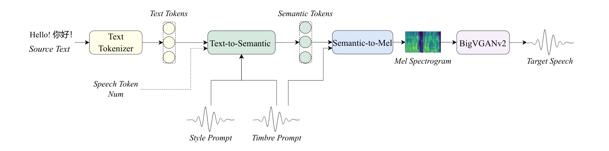
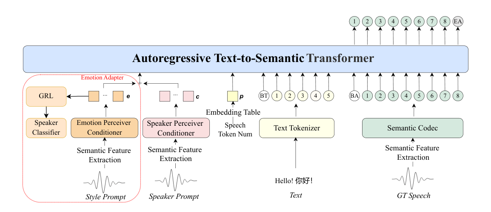
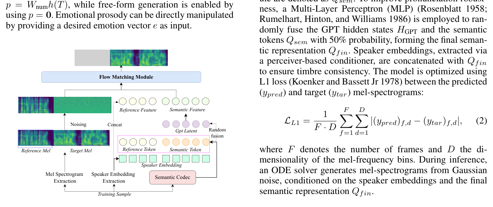
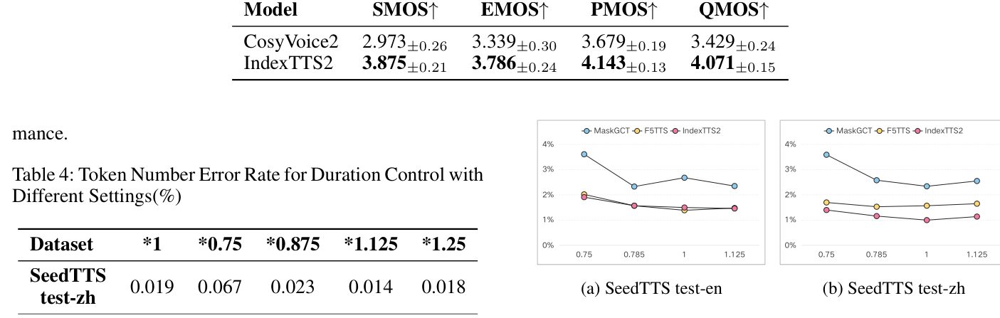

Siyi Zhou1, Yiquan Zhou1, Yi He1, Xun Zhou1, Jinchao Wang1, Wei Deng1, Jingchen Shu1 1Artificial Intelligence Platform Department, bilibili, China zhousiyi02@bilibili.com, zhouyiquan01@bilibili.com, heyi05@bilibili.com, zhouxun@bilibili.com, wangjinchao@bilibili.com, xuanwu@bilibili.com, shujingchen@bilibili.com,
摘要Abstract
Existing autoregressive large-scale text-to-speech (TTS) models have advantages in speech naturalness, but their token-by-token generation mechanism makes it difficult to precisely control the duration of synthesized speech. This becomes a significant limitation in applications requiring strict audio-visual synchronization, such as video dubbing. This paper introduces IndexTTS2, which proposes a novel, general, and autoregressive model-friendly method for speech duration control. The method supports two generation modes: one explicitly specifies the number of generated tokens to precisely control speech duration; the other freely generates speech in an autoregressive manner without specifying the number of tokens, while faithfully reproducing the prosodic features of the input prompt. Furthermore, IndexTTS2 achieves disentanglement between emotional expression and speaker identity, enabling independent control over timbre and emotion. In the zero-shot setting, the model can accurately reconstruct the target timbre (from the timbre prompt) while perfectly reproducing the specified emotional tone (from the style prompt). To enhance speech clarity in highly emotional expressions, we incorporate GPT latent representations and design a novel three-stage training paradigm to improve the stability of the generated speech. Additionally, to lower the barrier for emotional control, we designed a soft instruction mechanism based on text descriptions by finetuning Qwen3, effectively guiding the generation of speech with the desired emotional orientation. Finally, experimental results on multiple datasets show that IndexTTS2 outperforms state-of-the-art zero-shot TTS models in terms of word error rate, speaker similarity, and emotional fidelity. Audio samples are available at: https://index-tts.github.io/index-tts2.github.io/.
现有的自回归大规模文本转语音（TTS）模型在语音自然度上具有优势，但其逐 token 生成的机制使得精确控制合成语音的时长变得困难。在要求严格音画同步的应用（如视频配音）中，这成为一项显著的局限。本文提出 IndexTTS2，给出了一种新颖、通用且对自回归模型友好的语音时长控制方法。该方法支持两种生成模式：一种显式指定生成的 token 数量以精确控制语音时长；另一种不指定 token 数量、以自回归方式自由生成语音，同时忠实复现输入提示的韵律特征。此外，IndexTTS2 实现了情感表达与说话人身份之间的解耦，从而可以独立控制音色与情感。在零样本设定下，模型能够准确重建目标音色（来自音色提示），同时完美复现指定的情感基调（来自风格提示）。为增强高情感表达下的语音清晰度，我们引入 GPT 隐表征，并设计了新颖的三阶段训练范式来提升生成语音的稳定性。此外，为降低情感控制的使用门槛，我们通过对 Qwen3 的微调设计了基于文本描述的软指令机制，有效引导模型生成具有所需情感倾向的语音。最后，在多个数据集上的实验结果表明，IndexTTS2 在词错误率（WER）、说话人相似度和情感保真度方面均优于最先进的零样本 TTS 模型。音频样例见：https://index-tts.github.io/index-tts2.github.io/。
引言Introduction
Recent advances in vector quantization (van den Oord, Vinyals, and Kavukcuoglu 2017; Mentzer et al. 2023), Transformer architectures (Vaswani et al. 2017; Touvron et al. 2023), and large-scale data have enabled zero-shot TTS models to synthesize speech with timbre, prosody, and emotion from minimal audio prompts (Shen et al. 2024; Casanova et al. 2024; Du et al. 2024b). These models outperform traditional systems (Ren et al. 2022; Kim et al. 2020) Copyright © 2026, Association for the Advancement of Artificial Intelligence (www.aaai.org). All rights reserved. in naturalness and flexibility, enabling applications like AI dubbing (Cong et al. 2025). Current TTS models are categorized into autoregressive (AR) (Sahipjohn et al. 2024; Li et al. 2025; Kim, Hong, and Choi 2023; Du et al. 2024a; Zhou et al. 2024; Chen et al. 2024a; Wang et al. 2025; Guo et al. 2024) and non-autoregressive (NAR) (Chen et al. 2025; Lee et al. 2024; Shen et al. 2024; Yang et al. 2024; Wang et al. 2024; Le et al. 2023; Eskimez et al. 2024) systems.
向量量化（van den Oord, Vinyals, and Kavukcuoglu 2017; Mentzer et al. 2023）、Transformer 架构（Vaswani et al. 2017; Touvron et al. 2023）以及大规模数据的最新进展，使零样本 TTS 模型能够仅凭极短的音频提示合成带有音色、韵律和情感的语音（Shen et al. 2024; Casanova et al. 2024; Du et al. 2024b）。这些模型在自然度和灵活性上超越了传统系统（Ren et al. 2022; Kim et al. 2020）（原文此处混入版權页脚文字：Copyright © 2026, Association for the Advancement of Artificial Intelligence (www.aaai.org)。版权所有。）等），从而支撑了 AI 配音（Cong et al. 2025）等应用。当前的 TTS 模型可分为自回归（AR）系统（Sahipjohn et al. 2024; Li et al. 2025; Kim, Hong, and Choi 2023; Du et al. 2024a; Zhou et al. 2024; Chen et al. 2024a; Wang et al. 2025; Guo et al. 2024）与非自回归（NAR）系统（Chen et al. 2025; Lee et al. 2024; Shen et al. 2024; Yang et al. 2024; Wang et al. 2024; Le et al. 2023; Eskimez et al. 2024）两大类。
AR-based zero-shot TTS models like XTTS (Casanova et al. 2024), Cosyvoice (Du et al. 2024a,b), and SparkTTS (Wang et al. 2025) show significant performance in terms of naturalness and expressiveness owing to their random sampling strategy and token-by-token generation. NAR-based models such as MaskGCT (Wang et al. 2024) and F5-TTS (Chen et al. 2024b) enable fast inference via parallel decoding and support flexible parameter control (e.g., duration) through human intervention or model autonomy. However, AR models face challenges in duration control due to their sequential generation nature, limiting their applicability in time-sensitive scenarios like automated dubbing. Additionally, while TTS models excel in timbre reproduction, their emotional expression remains limited by scarce training data. Existing methods for emotional expression include emotion labels in training data (Zhou et al. 2023; Qi et al. 2024), mapping natural language descriptions with emotion audio via CLAP (Elizalde et al. 2023; Radford et al. 2021), instruction fine-tuning (Du et al. 2024b), and reference to emotional audio (Zhou et al. 2024), but these approaches lack robustness in affective range and control precision.
基于 AR 的零样本 TTS 模型，如 XTTS（Casanova et al. 2024）、Cosyvoice（Du et al. 2024a,b）和 SparkTTS（Wang et al. 2025），得益于其随机采样策略和逐 token 生成方式，在自然度和表现力上表现突出。基于 NAR 的模型，如 MaskGCT（Wang et al. 2024）和 F5-TTS（Chen et al. 2024b），通过并行解码实现快速推理，并通过人工干预或模型自主来支持灵活的参数控制（例如时长）。然而，AR 模型由于其顺序生成的本质，在时长控制上面临挑战，限制了它们在自动配音等时间敏感场景中的适用性。此外，尽管 TTS 模型在音色复现上表现出色，但其情感表达仍受限于稀缺的训练数据。现有的情感表达方法包括：在训练数据中标注情感标签（Zhou et al. 2023; Qi et al. 2024）、通过 CLAP 将自然语言描述与情感音频对齐（Elizalde et al. 2023; Radford et al. 2021）、指令微调（Du et al. 2024b），以及参考情感音频（Zhou et al. 2024），但这些方法在情感范围和控制精度的鲁棒性上仍有欠缺。
We introduce IndexTTS2 (Figure 1), a novel zero-shot speech generation model that addresses both fixed-duration speech generation and natural-duration speech synthesis while enhancing emotional expressiveness. The model comprises three core modules: the Text-to-Semantic (T2S) module, the Semantic-to-Mel (S2M) module, and the Vocoder. The T2S module employs an autoregressive transformer framework to generate semantic tokens from text, timbre/style prompts, and an optional speech token count. Under specified token count constraints, a duration encoding mechanism ensures fixed-length token sequences with preserved semantic integrity. For emotional modeling, the T2S module extracts emotional features from style prompts and uses a Gradient Reversal Layer (GRL) (Ganin et al. 2016; Ju et al. 2024) to eliminate emotion-irrelevant inforSemantic Tokens Text Tokens Hello! 你好！ Text Tokenizer Text-to-Semantic Source Text Speech Token Num Style Prompt Timbre Prompt Semantic-to-Mel BigVGANv2 Mel Spectrogram Target Speech
我们提出 IndexTTS2（Figure 1），这是一个新颖的零样本语音生成模型，同时解决固定时长语音生成与自然时长语音合成问题，并增强情感表现力。该模型由三个核心模块组成：文本到语义（T2S）模块、语义到 Mel 频谱（S2M）模块和声码器。T2S 模块采用自回归 Transformer 框架，根据文本、音色/风格提示以及可选的语音 token 数量来生成语义 token。在指定 token 数量的约束下，一套时长编码机制可保证生成固定长度的 token 序列，同时保持语义完整性。在情感建模方面，T2S 模块从风格提示中提取情感特征，并使用梯度反转层（GRL）（Ganin et al. 2016; Ju et al. 2024）来消除与情感无关的信（本句后半段为抽取自 Figure 1 的图片内文字残留：Semantic Tokens、Text Tokens、Hello! 你好！、Text Tokenizer、Text-to-Semantic、Source Text、Speech Token Num、Style Prompt、Timbre Prompt、Semantic-to-Mel、BigVGANv2、Mel Spectrogram、Target Speech，即图 1 中的各模块标注）。

图Figure 1: The overview of IndexTTS2.
图 1：IndexTTS2 总览。
mation during training. A multi-stage training strategy is adopted to overcome the lack of high-quality emotional data and enhance expressive capabilities. To enable natural language emotion control in speech synthesis, we further design a Text-to-Emotion (T2E) module, distilling Deepseekr1’s (Guo et al. 2025) emotion distribution prediction ability into Qwen-3-1.7b (Yang et al. 2025) via Low-Rank Adaptation (LoRA) (Sundaram, Du, and Zhao 2019; Devalal and Karthikeyan 2018; Bor, Vidler, and Roedig 2016), and combine these probabilities with precomputed emotion embeddings to condition the T2S output. The S2M module generates mel-spectrograms via a non-autoregressive architecture, incorporating GPT latent representations to stabilize speech clarity during intense emotional expressions. The Vocoder module utilizes BigVGANv2 (Lee et al. 2023) to convert mel-spectrograms into audio waveforms.
息（接上句，即“消除与情感无关的信息”）。为克服高质量情感数据的缺乏并增强表达能力，模型采用了多阶段训练策略。为在语音合成中实现自然语言情感控制，我们进一步设计了文本到情感（T2E）模块，通过低秩适配（LoRA）（Sundaram, Du, and Zhao 2019; Devalal and Karthikeyan 2018; Bor, Vidler, and Roedig 2016）将 Deepseekr1（Guo et al. 2025）的情感分布预测能力蒸馏到 Qwen-3-1.7b（Yang et al. 2025）中，并将这些概率与预计算的情感嵌入相结合，以此作为 T2S 输出的条件。S2M 模块通过非自回归架构生成 Mel 频谱图，并融入 GPT 隐表征以在强烈情感表达时稳定语音清晰度。声码器模块使用 BigVGANv2（Lee et al. 2023）将 Mel 频谱图转换为音频波形。
The key contributions of this work are:
本工作的主要贡献如下：
• We propose a duration adaptation scheme for autoregressive TTS models. IndexTTS2 is the first autoregressive zero-shot TTS model to combine precise duration control with natural duration generation, and the method is scalable for any autoregressive large-scale TTS model. • The emotional and speaker-related features are decoupled from the prompts, and a feature fusion strategy is designed to maintain semantic fluency and pronunciation clarity during emotionally rich expressions. Furthermore, a tool was developed for emotion control, utilising natural language descriptions for the benefit of users. • To address the lack of highly expressive speech data, we propose an effective training strategy, significantly enhancing the emotional expressiveness of zeroshot TTS to State-of-the-Art (SOTA) level. • We will publicly release the code and pre-trained weights to facilitate future research and practical applications.
• 我们为自回归 TTS 模型提出了一种时长适配方案。IndexTTS2 是首个将精确时长控制与自然时长生成相结合的自回归零样本 TTS 模型，且该方法可推广到任意自回归大规模 TTS 模型。• 情感特征与说话人相关特征从提示中解耦，并设计了一种特征融合策略，以在情感丰富的表达中保持语义流畅度和发音清晰度。此外，我们还开发了一款情感控制工具，方便用户使用自然语言描述进行控制。• 为解决高表现力语音数据缺乏的问题，我们提出了一种有效的训练策略，将零样本 TTS 的情感表现力显著提升至最先进（SOTA）水平。• 我们将公开发布代码与预训练权重，以促进后续研究与实际应用。
相关工作Related Work
大规模 TTS 的精确时长控制Precise Duration Control for Large-Scale TTS.
Current zero-shot large-scale TTS models adopt autoregressive or non-autoregressive paradigms, with non-autoregressive approaches excelling in duration control via duration predictors based on diffusion, transformers (Lee et al. 2024), flows (Kim, Hong, and Choi 2023), or language models (Yang et al. 2024). Methods like MaskGCT (Wang et al. 2024) use flow modeling for phoneme-level duration predictors based on diffusion, transformers (Lee et al. 2024), flows (Kim, Hong, and Choi 2023), or language models (Yang et al.
当前的零样本大规模 TTS 模型采用自回归或非自回归范式，其中非自回归方法通过基于扩散、Transformer（Lee et al. 2024）、流（Kim, Hong, and Choi 2023）或语言模型（Yang et al. 2024）的时长预测器，在时长控制上表现优异。MaskGCT（Wang et al. 2024）等方法使用流进行建模。（本句后半段为跨栏抽取残留，重复列出了基于扩散、Transformer、流或语言模型的音素级时长预测器的引用（Lee et al. 2024; Kim, Hong, and Choi 2023; Yang et al.）
2024). Methods like MaskGCT (Wang et al. 2024) use flow modeling for phoneme-level durations, while F5-TTS (Chen et al. 2024b) estimates durations via text-speech length ratios. Autoregressive models (e.g., VoxInstruct (Zhou et al. 2024), Takin (Chen et al. 2024a)) rely on natural language instructions but face precision limitations. Techniques like CosyVoice (Du et al. 2024a), Spark-TTS (Wang et al. 2025), DubWise (Sahipjohn et al. 2024), and FleSpeech (Li et al. 2025) address token generation control through specialized cues, attribute labels, cross-modal fusion, or multimodal embeddings. This work introduces an enhanced autoregressive TTS model with precise token number control to overcome these challenges.
2024），与上句末尾相接，为同一处引用列表的断行残留。）MaskGCT（Wang et al. 2024）等方法用流建模来预测音素级时长，而 F5-TTS（Chen et al. 2024b）则通过文本—语音长度比来估计时长。自回归模型（如 VoxInstruct（Zhou et al. 2024）、Takin（Chen et al. 2024a））依赖自然语言指令，但在精度上存在局限。CosyVoice（Du et al. 2024a）、Spark-TTS（Wang et al. 2025）、DubWise（Sahipjohn et al. 2024）和 FleSpeech（Li et al. 2025）等技术则通过专门提示、属性标签、跨模态融合或多模态嵌入来解决 token 生成控制问题。本工作提出了一种增强的自回归 TTS 模型，通过精确的 token 数量控制来克服上述挑战。
情感可控的大规模 TTSEmotionally Controllable Large-Scale TTS.
Emotion control in large-scale TTS leverages natural language descriptions (e.g., Controlspeech (Ji et al. 2024)), with CosyVoice (Du et al. 2024a) using preset instructions and EmoSphere++ (Cho et al. 2025) generating interpretable style embeddings. StyleTTS 2 (Li et al. 2023) employs diffusion-based style vectors, SC VALL-E (Kim, Hong, and Choi 2023) integrates style networks, and Vevo (Zhang et al. 2025) uses content-style token systems. Multimodal approaches like FleSpeech (Li et al. 2025) embed textual, audio, and visual cues into unified representations for precise regulation. This work enhances emotional expressiveness via additional emotion features, enabling flexible control through natural language or reference audio inputs.
大规模 TTS 中的情感控制可利用自然语言描述（如 Controlspeech（Ji et al. 2024）），其中 CosyVoice（Du et al. 2024a）使用预设指令，EmoSphere++（Cho et al. 2025）生成可解释的风格嵌入。StyleTTS 2（Li et al. 2023）采用基于扩散的风格向量，SC VALL-E（Kim, Hong, and Choi 2023）集成风格网络，Vevo（Zhang et al. 2025）使用内容—风格 token 体系。FleSpeech（Li et al. 2025）等多模态方法将文本、音频和视觉线索嵌入统一表征中，以实现精确调控。本工作通过额外的情感特征增强情感表现力，支持通过自然语言或参考音频输入进行灵活控制。
提出的方法Proposed Method
We propose IndexTTS2, a cascaded autoregressive zeroshot TTS system comprising three modules: the Text-toSemantic (T2S) module, Semantic-to-Mel (S2M) module, and BigVGANv2 vocoder, each trained separately with tailored strategies to enhance emotional expressiveness. The T2S module generates semantic tokens from target text, style/timbre prompts, and an optional speech token count, while the S2M module predicts mel-spectrograms using these tokens and the timbre prompt. The BigVGANv2 vocoder then converts the mel-spectrograms into speech EA Autoregressive Text-to-Semantic Transformer Emotion Adapter
我们提出 IndexTTS2，这是一个级联的自回归零样本 TTS 系统，由三个模块组成：文本到语义（T2S）模块、语义到 Mel（S2M）模块和 BigVGANv2 声码器，各模块分别采用针对性策略独立训练，以增强情感表现力。T2S 模块根据目标文本、风格/音色提示以及可选的语音 token 数量生成语义 token，而 S2M 模块则利用这些 token 和音色提示来预测 Mel 频谱图。BigVGANv2 声码器随后将 Mel 频谱图转换为语音（本句末尾混入 Figure 2 图片内文字残留：EA、Autoregressive Text-to-Semantic Transformer、Emotion Adapter + BT、1 2 3 4 5 ……，即图 2 中的模块标注与序号）。
+BT1 2 3 4 5 ...
图Figure 2: Autoregressive Text-to-Semantic Module. When speech token num is specified, precise control of the number of synthesized semantic tokens is performed. The emotion adapter (red dashed lines) is employed to extract emotional features from the style prompt, which are then used as input to the Text-to-Semantic process for the reconstruction of emotions.
图 2：自回归文本到语义模块。当指定语音 token 数量时，模块会对生成的语义 token 数量进行精确控制。情感适配器（红色虚线）用于从风格提示中提取情感特征，随后作为文本到语义过程的输入，用于情感的重建。
waveforms. To enable natural language-based emotional control, we introduce a Text-to-Emotion (T2E) module that produces an emotion vector from input text, which is integrated into the T2S module via a dedicated emotion vector interface. This design facilitates flexible, high-quality emotional speech synthesis through explicit natural language instructions or reference audio inputs.
波形（接上句，即“转换为语音波形”）。为实现基于自然语言的情感控制，我们引入了文本到情感（T2E）模块，它从输入文本生成情感向量，并通过专用的情感向量接口集成到 T2S 模块中。这一设计使得通过显式的自然语言指令或参考音频输入，即可实现灵活、高质量的情感语音合成。
自回归文本到语义模块（T2S）Autoregressive Text-to-Semantic Module (T2S)
We formulate T2S as an autoregressive semantic token prediction task. As shown in Figure 2, the input sequence is constructed as [c, p, e⟨BT ⟩, Etext, e⟨BA⟩, Esem], where c denotes speaker attributes, p controls duration, Etext represents text embeddings, and Esem denotes the embeddings of semantic tokens extracted from ground-truth speech via a semantic codec. e⟨BT ⟩and e⟨BA⟩function as dedicated boundary tokens, serving to demarcate the extents of the text sequence and the semantic sequence, respectively. Our architecture resembles IndexTTS (Deng et al. 2025) with key innovations in duration and emotion control.
我们将 T2S 形式化为一个自回归的语义 token 预测任务。如 Figure 2 所示，输入序列构造为 [c, p, e⟨BT⟩, Etext, e⟨BA⟩, Esem]，其中 c 表示说话人属性，p 控制时长，Etext 表示文本嵌入，Esem 表示由语义 codec 从真实语音中提取的语义 token 的嵌入。e⟨BT⟩ 和 e⟨BA⟩ 作为专用的边界 token，分别用于界定文本序列和语义序列的范围。我们的架构与 IndexTTS（Deng et al. 2025）相似，但在时长与情感控制上有关键创新。
时长Duration
Control: Duration regulation is achieved through a dedicated embedding p computed from the target semantic token length T, where p = Wnumh(T). Here, Wnum ∈RLspeech×D represents an embedding table with Lspeech denoting the maximum semantic sequence length and D being the embedding dimensionality. The function h(T) returns a one-hot vector corresponding to T (Rodr´ıguez et al. 2018). In particular, we implemented a special trick. We set the constraint Wsem = Wnum is imposed between Wnum and the semantic positional embedding table Wsem. This equation enables the autoregressive system to precisely align positional information with target duration information during generation, thereby accurately producing sequences of the desired length.
控制：时长调节通过一个由目标语义 token 长度 T 计算得到的专用嵌入 p 来实现，其中 p = Wnum·h(T)。这里，Wnum ∈ R^{Lspeech×D} 表示一个嵌入表，Lspeech 为最大语义序列长度，D 为嵌入维度。函数 h(T) 返回对应于 T 的独热向量（Rodríguez et al. 2018）。特别地，我们实现了一个特殊技巧。我们在 Wnum 与语义位置嵌入表 Wsem 之间施加约束 Wsem = Wnum（原文句式残缺，按上下文译出）。这一等式使自回归系统在生成过程中能将位置信息与目标时长信息精确对齐，从而准确产出期望长度的序列。
情感控制Emotional Control:
Emotion synthesis integrates an emotion embedding e into the conditioning feature via the input sequence [c + e, p, e⟨BT ⟩, Etext, e⟨BA⟩, Esem], where e is extracted from style prompts using a Conformer-based emotion perceiver conditioner. To effectively capture the representation of emotional rhythm, we employ the following design: the speaker feature c is derived from a pretrained speaker perceiver conditioner extractor and primarily encodes timbral characteristics. To minimize the content overlap between e and c while enhancing feature disentanglement, we employ a GRL during training. This adversarial mechanism forces e to exclusively capture emotional and rhythmic attributes, remaining invariant to speaker-specific timbre characteristics, thereby enabling more precise and robust control over global emotional prosody generation.
情感合成将情感嵌入 e 通过输入序列 [c + e, p, e⟨BT⟩, Etext, e⟨BA⟩, Esem] 融入条件特征，其中 e 由基于 Conformer 的情感感知条件器从风格提示中提取。为有效捕捉情感节奏的表征，我们采用如下设计：说话人特征 c 来自预训练的说话人感知条件提取器，主要编码音色特征。为尽量减少 e 与 c 之间的内容重叠并增强特征解耦，我们在训练中使用了 GRL。这种对抗机制迫使 e 只捕捉情感与节奏属性，而对说话人特有的音色特征保持不变，从而实现对全局情感韵律生成的更精确、更鲁棒的控制。
训练与推理Training and Inference:
Our training data is organized by speaker, with each speaker having at least two utterances. For prompt and target partitioning, we divide different utterances from the same speaker into prompts and training targets. To enhance data diversity, we apply random speed perturbation to both real speech and prompts using scaling coefficients r1 and r2.
我们的训练数据按说话人组织，每位说话人至少有两条语音。在划分提示与目标时，我们将同一说话人的不同语音分别划分为提示和训练目标。为增强数据多样性，我们使用缩放系数 r1 和 r2 对真实语音和提示都施加随机变速扰动。
We employ a dedicated three-stage training strategy for the T2S module: Stage 1: The model is trained on the full dataset using the input sequence [c, p, e⟨BT ⟩, Etext, e⟨BA⟩, Esem], where c is the speaker embedding and p is the duration embedding. To support both duration-controlled and free-form generation, p is randomly set to zero with a probability of 30%. This stage establishes the model’s foundational capabilities.
我们对 T2S 模块采用专门的三阶段训练策略：阶段 1：模型在全量数据集上训练，输入序列为 [c, p, e⟨BT⟩, Etext, e⟨BA⟩, Esem]，其中 c 为说话人嵌入，p 为时长嵌入。为同时支持时长可控生成与自由形式生成，p 以 30% 的概率被随机置零。该阶段建立模型的基础能力。
Stage 2: We refine the emotion control module using the modified input sequence [c+e, p, e⟨BT ⟩, Etext, e⟨BA⟩, Esem], where e denotes the emotion embedding. In this stage, the speaker perceiver conditioner (producing c) is frozen, while the emotion perceiver conditioner remains trainable. To disentangle speaker identity from emotional expression, a GRL and a speaker classifier are applied. Training is conducted on a curated subset of 135 hours of high-quality emotional speech. The joint loss function is defined as
阶段 2：我们使用修改后的输入序列 [c+e, p, e⟨BT⟩, Etext, e⟨BA⟩, Esem] 对情感控制模块进行细化，其中 e 表示情感嵌入。在该阶段，产生 c 的说话人感知条件器被冻结，而情感感知条件器保持可训练。为将说话人身份与情感表达解耦，训练中施加了一个 GRL 和一个说话人分类器。该阶段在一个精选的 135 小时高质量情感语音子集上训练。联合损失函数定义为
T XLAR = − 1 T + 1t=0 log q(yt) −α log q(e), (1)where yT represents the end-of-sequence token <EA>, q(yt) denotes the posterior probability of semantic tokens, q(e) denotes the posterior probability that e originates from the target speaker and α is the loss coefficient.
−1/(T+1)·Σ_{t=0}^{T} log q(yt) − α·log q(e)（公式经抽取重排），其中 yT 表示序列结束 token <EA>，q(yt) 表示语义 token 的后验概率，q(e) 表示 e 来自目标说话人的后验概率，α 为损失系数。
Stage 3: To improve robustness, we freeze all feature conditioners and perform fine-tuning on the full dataset.
阶段 3：为提升鲁棒性，我们冻结所有特征条件器，并在全量数据集上进行微调。

图Figure 3: Semantic-to-Mel module based on flow matching.
图 3：基于流匹配的语义到 Mel 模块。
语义到 Mel 模块（S2M）Semantic-to-Mel Module (S2M)
As shown in Figure 3, the S2M module employs a nonregressive generation framework based on flow matching (Lipman et al. 2023; Liu 2024; Peebles and Xie 2023). The model synthesizes target mel-spectrograms by combining prompt mel-spectrograms, speaker embeddings, and semantic features. To address pronunciation issues in emotional speech generation, we introduce GPT latent enhancement.
如 Figure 3 所示，S2M 模块采用基于流匹配（Lipman et al. 2023; Liu 2024; Peebles and Xie 2023）的非自回归生成框架。该模型通过结合提示 Mel 频谱图、说话人嵌入和语义特征来合成目标 Mel 频谱图。为解决情感语音生成中的发音问题，我们引入了 GPT 隐表征增强。
GPT 隐表征增强GPT Latent Enhancement:
Conditional flow matching learns an Ordinary Differential Equation model (Chen et al. 2018) that maps samples from a noise distribution to target mel-spectrograms, conditioned on timbre reference audio and semantic codes generated by the T2S module.
条件流匹配学习一个常微分方程（ODE）模型（Chen et al. 2018），该模型以音色参考音频以及 T2S 模块生成的语义编码为条件，将样本从噪声分布映射到目标 Mel 频谱图。
To mitigate speech slurring in speech synthesis, especially when synthesizing emotional speech, we introduce a novel approach leveraging latent features from the GPT model, denoted as HGPT, which are extracted from the output of the final transformer layer in the T2S module. Given that the T2S module is trained to convert text into rich semantic representations using a large-scale dataset, we hypothesize that HGPT encodes substantial textual and contextual information. To exploit this, we fuse HGPT with the semantic features via vector addition, forming an enhanced, context-enriched representation. This fused feature is then used as input to the S2M training process. Ablation studies validate that this integration effectively reduces the word error rate in highly expressive speech synthesis.
为缓解语音合成中的含混不清问题——尤其是在合成情感语音时——我们提出了一种利用 GPT 模型隐特征的新方法，记作 HGPT，这些特征取自 T2S 模块中最后一层 Transformer 的输出。鉴于 T2S 模块是在大规模数据集上训练、用于将文本转换为丰富语义表征的，我们假设 HGPT 编码了大量文本与上下文信息。为利用这一点，我们将 HGPT 与语义特征通过向量加法融合，形成增强的、上下文更丰富的表征。该融合特征随后被用作 S2M 训练过程的输入。消融实验验证，这一融合能有效降低高表现力语音合成中的词错误率（WER）。
训练与推理Training and Inference:
The S2M module is trained in a single stage. During training, each input sentence is randomly split into a prompt segment and a target segment. The mel-spectrograms corresponding to the target segment are fully noised to form the source inputs for the diffusion process. Semantic tokens generated by the T2S module are denoted as Qsem. To improve pronunciation robustness, a Multi-Layer Perceptron (MLP) (Rosenblatt 1958; Rumelhart, Hinton, and Williams 1986) is employed to randomly fuse the GPT hidden states HGPT and the semantic tokens Qsem with 50% probability, forming the final semantic representation Qfin. Speaker embeddings, extracted via a perceiver-based conditioner, are concatenated with Qfin to ensure timbre consistency. The model is optimized using L1 loss (Koenker and Bassett Jr 1978) between the predicted (ypred) and target (ytar) mel-spectrograms:
S2M 模块采用单阶段训练。训练时，每条输入句子被随机切分为一个提示片段和一个目标片段。目标片段对应的 Mel 频谱图被完全加噪，作为扩散过程的源输入。由 T2S 模块生成的语义 token 记作 Qsem。为提升发音鲁棒性，训练中用一个多层感知机（MLP）（Rosenblatt 1958; Rumelhart, Hinton, and Williams 1986）以 50% 的概率将 GPT 隐状态 HGPT 与语义 token Qsem 随机融合，形成最终的语义表征 Qfin。由感知器（perceiver）条件器提取的说话人嵌入与 Qfin 拼接，以保证音色一致性。模型使用预测 Mel 频谱图（ypred）与目标 Mel 频谱图（ytar）之间的 L1 损失（Koenker and Bassett Jr 1978）进行优化：
文本到情感（T2E）Text-to-Emotion (T2E)
We achieve the effect of natural language emotion control through the following steps.
我们通过以下步骤实现自然语言情感控制的效果。
First, we define seven basic emotions: E = {Anger, Happiness, Fear, Disgust, Sadness, Surprise, Neutral}. For each emotion ei ∈E, we extract embeddings from several relevant emotional audio samples using the pre-trained emotion perceiver conditioner in the T2S, forming a fixed emotion embedding set V.
首先，我们定义七种基本情感：E = {愤怒、快乐、恐惧、厌恶、悲伤、惊讶、中性}。对于每种情感 ei ∈ E，我们使用 T2S 中预训练的情感感知条件器，从若干条相关的情感音频样本中提取嵌入，构成一个固定的情感嵌入集合 V。
Then, we use the large language model Deepseek-r1 as a teacher to map a text input t to a 7-dimensional emotion probability distribution:
然后，我们使用大语言模型 Deepseek-r1 作为教师，将文本输入 t 映射为一个 7 维情感概率分布：p = Deepseek-r1(t) ∈ ∆7，其中 ∆7 为 7 维概率单纯形（满足 Σi=1..7 pi = 1，pi ≥ 0）。
p = Deepseek-r1(t) ∈∆7, (3)∆7is the 7-dimensional probability simplex (P7 i=1 pi = 1, pi ≥0). To enable efficient inference with smaller models, we apply knowledge distillation to transfer the teacher’s behavior to a smaller student model Qwen-3- 1.7b.
然后，我们使用大语言模型 Deepseek-r1 作为教师，将文本输入 t 映射为一个 7 维情感概率分布：p = Deepseek-r1(t) ∈ ∆7，其中 ∆7 为 7 维概率单纯形（满足 Σi=1..7 pi = 1，pi ≥ 0）。为了能够用更小的模型实现高效推理，我们应用知识蒸馏，将教师的行为迁移到更小的学生模型 Qwen-3-1.7b。
We construct a training dataset of 1000 text-distribution pairs using two types of prompts with Deepseek-r1:
我们使用 Deepseek-r1 配合两类提示，构建了一个包含 1000 个文本—分布对的训练数据集：
• Descriptive: “Please generate descriptive sentences that express {emotion}.” • Script-like: “Please generate script-like utterances that express {emotion}.”
• 描述型：“请生成表达{情感}的描述性句子。”• 剧本型：“请生成表达{情感}的剧本式台词。”
For each generated sentence, we use a classification prompt to obtain the corresponding emotion distribution: “Given the input sentence, return a JSON object with probabilities for each of the 7 emotions. Probabilities must sum to 1 and be rounded to two decimal places.”
对于每个生成的句子，我们使用一条分类提示来获取对应的情感分布：“给定输入句子，返回一个 JSON 对象，给出 7 种情感各自的概率。概率之和必须为 1，并四舍五入保留两位小数。”
Using this dataset, we fine-tune Qwen-3-1.7b via LoRA. The training objective is to minimize the cross-entropy loss between the student model’s predictions and the teacherprovided distributions: min ϕ E(t,p)∼D CrossEntropy Qwen-3θ+ϕ(t), p
利用该数据集，我们通过 LoRA 对 Qwen-3-1.7b 进行微调。训练目标是最小化学生模型预测与教师分布之间的交叉熵：min_ϕ E_{(t,p)~D} CrossEntropy(Qwen-3_{θ+ϕ}(t), p)（式 4），其中 θ 为 Qwen-3-1.7b 原始参数，ϕ 为 LoRA 参数，t 为数据集 D 的输入文本样本，p 为教师模型生成的软概率分布。
, (4)where θ denotes the original parameters of Qwen-3-1.7b and ϕ represents the LoRA parameters. t refers to input text samples from the dataset D, while p denotes the soft probability distributions generated by the teacher model. After training, the distilled Qwen-3-1.7b model can efficiently replace Deepseek-r1 during inference with significantly reduced computational cost.
训练目标是最小化学生模型预测与教师分布之间的交叉熵：min_ϕ E_{(t,p)~D} CrossEntropy(Qwen-3_{θ+ϕ}(t), p)（式 4），其中 θ 为 Qwen-3-1.7b 原始参数，ϕ 为 LoRA 参数，t 为数据集 D 的输入文本样本，p 为教师模型生成的软概率分布。训练完成后，蒸馏得到的 Qwen-3-1.7b 模型即可在推理时高效替代 Deepseek-r1，计算成本显著降低。
Next step, the emotion vector einput is computed as a weighted average over the emotion embedding set V:
接下来，情感向量 einput 通过对情感嵌入集合 V 加权平均计算得到：
e∈E pe · 1 |Ve|einput = X
（公式片段：e_input = X（见原文）。）
Xv∈Ve v. (5)Finally, this emotion vector is fed as a prompt into the T2S model, enabling the generation of speech with the desired emotional characteristics.
最后，该情感向量作为提示送入 T2S 模型，从而生成具有所需情感特征的语音。
实验Experiments
Experimental Settings Datasets: We trained our model using 55K hours of data, including 30K Chinese data and 25K English data. Most of the data comes from Emilia dataset (He et al. 2024), in addition to some audiobooks and purchasing data. A total of 135 hours of emotional data came from 361 speakers, of which 29 hours came from the ESD dataset (Zhou et al. 2021) and the rest from commercial purchases. To validate the fundamental capabilities of TTS systems, we evaluated our model on four benchmarks: (1) SeedTTS test-en (Anastassiou et al. 2024), introduced in SeedTTS containing 1,000 utterances from the Common Voice dataset; (2) SeedTTS test-zh (Anastassiou et al. 2024), 2,000 utterances sourced from DiDiSpeech (Guo et al. 2021); (3) LibriSpeech-testclean (Panayotov et al. 2015), 2,620 randomly selected utterances from the LibriSpeech corpus; and (4) AISHELL-1 (Bu et al. 2017), 1,000 utterances randomly sampled from the AISHELL-1 dataset. To better assess emotional modeling capability, we recruited 12 speakers (5 males and 7 females) to record an emotional test set. Each speaker recorded 3 sentences for each of the 7 emotional categories.
实验设置 数据集：我们使用 55K 小时数据训练模型，其中包括 30K 小时中文数据和 25K 小时英文数据。大部分数据来自 Emilia 数据集（He et al. 2024），另有一部分有声读物和外购数据。情感数据共 135 小时，来自 361 位说话人，其中 29 小时来自 ESD 数据集（Zhou et al. 2021），其余来自商业购买。为验证 TTS 系统的基础能力，我们在四个基准上评估模型：(1) SeedTTS test-en（Anastassiou et al. 2024），出自 SeedTTS，包含 1,000 条来自 Common Voice 数据集的语音；(2) SeedTTS test-zh（Anastassiou et al. 2024），包含 2,000 条来自 DiDiSpeech（Guo et al. 2021）的语音；(3) LibriSpeech-testclean（Panayotov et al. 2015），从 LibriSpeech 语料库中随机选取的 2,620 条语音；以及 (4) AISHELL-1（Bu et al. 2017），从 AISHELL-1 数据集中随机抽取的 1,000 条语音。为更好地评估情感建模能力，我们招募了 12 位说话人（5 男 7 女）录制了一个情感测试集。每位说话人为 7 类情感各录制 3 句。
评估指标Evaluation Metrics:
Objectively, speech intelligibility is evaluated using word error rate (WER), with FunASR (Gao et al. 2023) for Chinese content and Whisper (Radford et al. 2023) for English. Speaker similarity (SS) is computed as the cosine similarity between speaker embeddings from FunASR’s pretrained speaker recognition model, while emotion similarity (ES) is calculated using emotion representations from the open-source emotion2vec (Ma et al. 2024) model. Subjective evaluation is conducted through a multidimensional Mean Opinion Score (MOS) framework, where Similarity MOS (SMOS), Prosody MOS (PMOS), Quality MOS (QMOS), and Emotion MOS (EMOS) assess speaker similarity, prosody, audio quality, and emotional fidelity respectively, each rated on a 1–5 scale.
客观评估方面，语音可懂度使用词错误率（WER）衡量，中文内容用 FunASR（Gao et al. 2023）识别，英文用 Whisper（Radford et al. 2023）识别。说话人相似度（SS）计算为 FunASR 预训练说话人识别模型所提取说话人嵌入之间的余弦相似度，而情感相似度（ES）则使用开源 emotion2vec（Ma et al. 2024）模型的情感表征计算。主观评估通过多维平均意见分（MOS）框架进行，其中相似度 MOS（SMOS）、韵律 MOS（PMOS）、质量 MOS（QMOS）和情感 MOS（EMOS）分别评估说话人相似度、韵律、音质和情感保真度，各项均按 1–5 分打分。
基线Baseline:
We compared our model with state-of-the-art zeroshot TTS systems, including MaskGCT (Wang et al. 2024), F5-TTS (Chen et al. 2024b), CosyVocie2 (Du et al. 2024b), SparkTTS (Wang et al. 2025) and the original IndexTTS (Deng et al. 2025) model. In addition, we conduct two ablation experiments to validate the architectural design and training methodology of IndexTTS2: (1) GPT latent enhancement removal. This experiment ablates the GPT- derived latent feature enhancement to evaluate its functional contribution in the S2M module. (2) Training strategy ablation. This experiment ablates additional training strategies to evaluate its contribution to highly expressive emotional speech synthesis.
我们将模型与最先进的零样本 TTS 系统进行了比较，包括 MaskGCT（Wang et al. 2024）、F5-TTS（Chen et al. 2024b）、CosyVocie2（Du et al. 2024b）、SparkTTS（Wang et al. 2025）以及原版 IndexTTS（Deng et al. 2025）模型。此外，我们开展了两项消融实验以验证 IndexTTS2 的架构设计与训练方法：(1) 移除 GPT 隐表征增强。该实验消融源自 GPT 的隐特征增强，以评估其在 S2M 模块中的功能贡献。(2) 训练策略消融。该实验消融额外的训练策略，以评估其对高表现力情感语音合成的贡献。
训练Training
Hyperparameter Details: We trained IndexTTS2 on 8 NVIDIA A100 80GB GPUs using the AdamW optimizer with an initial learning rate of 2e-4. Our model was trained for a total of three weeks. We used the same text tokenizer as IndexTTS and adopted the semantic codec from the MaskGCT model.
超参数细节：我们在 8 张 NVIDIA A100 80GB GPU 上训练 IndexTTS2，使用 AdamW 优化器，初始学习率 2e-4。模型总共训练了三周。我们使用与 IndexTTS 相同的文本分词器，并采用了 MaskGCT 模型的语义 codec。
实验结果Experiment Results
基础能力Basic
Competence Comparison: We evaluated IndexTTS2 on standard test sets (LibriSpeech-test-clean, SeedTTS test-zh/en, and AIShell-1 test)1. As shown in Table 1, compared to five representative models (MaskGCT, F5- TTS, CosyVoice2, SparkTTS, and the original IndexTTS), IndexTTS2 achieves SOTA performance in objective evaluation across most test sets, with only marginal underperformance on AIShell-1 relative to the ground truth and IndexTTS. In subjective evaluation, IndexTTS2 outperforms all baseline models except for a slight underperformance against IndexTTS on SeedTTS test-en. Results from the ablation experiment show that removing the GPT latent enhancement consistently improves SS while degrading WER across datasets, and the ablated model receives lower subjective scores across the board compared to IndexTTS2. Notably, the subjective speaker similarity MOS (SMOS) indicate that despite the slight drop in SS, the enhanced model is perceived by human listeners as more similar to the target speaker. These findings confirm the importance of GPT latents in enhancing semantic clarity.
能力对比：我们在标准测试集（LibriSpeech-test-clean、SeedTTS test-zh/en 与 AIShell-1 test）上评测 IndexTTS2（脚注 1）。如 Table 1 所示，与五个代表性模型（MaskGCT、F5-TTS、CosyVoice2、SparkTTS 和原版 IndexTTS）相比，IndexTTS2 在多数测试集的客观评估上取得 SOTA 表现，仅在 AIShell-1 上相对真实语音与 IndexTTS 略有不及。在主观评估中，IndexTTS2 优于所有基线模型，仅在 SeedTTS test-en 上略逊于 IndexTTS。消融实验结果表明，移除 GPT 隐表征增强会在各数据集上一致地提升 SS 但同时劣化 WER，且消融模型在所有主观评分上都低于 IndexTTS2。值得注意的是，主观说话人相似度 MOS（SMOS）表明，尽管 SS 略有下降，人类听感上增强模型反而更接近目标说话人。这些发现印证了 GPT 隐表征在增强语义清晰度上的重要性。
情感表现对比Emotional Performance Comparison:
We evaluated IndexTTS2’s emotional expressiveness on our constructed emotional dataset using relevant metrics. As shown in Table 1To ensure cross-dataset evaluation consistency, we reimplemented some published experiments. Observed minor performance variations—attributable to inherent model fluctuations or using FunASR-provided speaker feature replacements—remain within acceptable ranges, preserve overall rankings, and validate original results.
我们在构建的情感数据集上使用相关指标评估了 IndexTTS2 的情感表现力。如 Table 1（脚注，原文与正文连排）所示：为保证跨数据集评估的一致性，我们复现了部分已发表的实验。观察到的轻微性能波动——可归因于模型固有的波动或改用 FunASR 提供的说话人特征——仍在可接受范围内，不影响整体排名，并验证了原始结果。
Table 1: Zero-Shot Performance Comparison of Various Systems on Different Datasets
表 1：各系统在不同数据集上的零样本性能对比
| Dataset | Model | SS↑ | WER(%)↓ | SMOS↑ | PMOS↑ | QMOS↑ |
|---|---|---|---|---|---|---|
| Ground Truth | 0.833 | 3.405 | 4.02±0.22 | 3.85±0.26 | 4.23±0.12 | |
| MaskGCT | 0.790 | 7.759 | 4.12±0.09 | 3.98±0.11 | 4.19±0.19 | |
| F5-TTS | 0.821 | 8.044 | 4.08±0.21 | 3.73±0.27 | 4.12±0.13 | |
| LibriSpeech | CosyVoice2 | 0.843 | 5.999 | 4.02±0.22 | 4.04±0.28 | 4.17±0.25 |
数据集Dataset
SparkTTS0.756 8.843 4.06±0.20 3.94±0.21 4.15±0.16IndexTTS0.819 3.436 4.23±0.14 4.02±0.18 4.29±0.22IndexTTS20.870 3.115 4.44±0.12 4.12±0.17 4.29±0.14- GPT latent0.887 3.334 4.33±0.10 4.10±0.12 4.17±0.22LibriSpeechLibriSpeech
test-clean Ground Truth
（表格行）test-clean；Ground Truth（后续照原文）。
0.820 1.897 4.21±0.19 4.06±0.25 4.40±0.150.824 2.530 4.35±0.20 4.02±0.24 4.50±0.170.803 1.937 4.44±0.14 4.06±0.21 4.40±0.120.794 3.277 4.42±0.26 3.96±0.24 4.52±0.15SparkTTS0.755 1.543 3.96±0.23 4.12±0.22 3.89±0.20IndexTTS0.808 1.844 4.67±0.16 4.52±0.14 4.67±0.19IndexTTS20.860 1.521 4.42±0.19 4.40±0.13 4.48±0.15- GPT latent0.879 1.616 4.40±0.22 4.31±0.17 4.42±0.20SeedTTSSeedTTS
test-en Ground Truth
为验证 TTS 系统的基础能力，我们在四个基准上评估模型：(1) SeedTTS test-en（Anastassiou et al. 2024），出自 SeedTTS，包含 1,000 条来自 Common Voice 数据集的语音；(2) SeedTTS test-zh（Anastassiou et al. 2024），包含 2,000 条来自 DiDiSpeech（Guo et al. 2021）的语音；(3) LibriSpeech-testclean（Panayotov et al. 2015），从 LibriSpeech 语料库中随机选取的 2,620 条语音；以及 (4) AISHELL-1（Bu et al. 2017），从 AISHELL-1 数据集中随机抽取的 1,000 条语音。
0.776 1.254 3.81±0.24 4.04±0.28 4.21±0.260.807 2.447 3.94±0.22 3.54±0.26 4.15±0.150.844 1.514 4.19±0.21 3.88±0.23 4.38±0.160.846 1.451 4.12±0.25 4.33±0.19 4.31±0.21SparkTTS0.683 2.636 3.65±0.26 4.10±0.25 3.79±0.18IndexTTS0.781 1.097 4.10±0.09 3.73±0.23 4.33±0.17IndexTTS20.865 1.008 4.44±0.17 4.46±0.11 4.54±0.08- GPT latent0.890 1.261 4.44±0.13 4.33±0.15 4.48±0.17SeedTTSSeedTTS
test-zh Ground Truth
（表格行）test-zh；Ground Truth（后续照原文）。
0.847 1.840 4.27±0.19 3.83±0.25 4.42±0.070.598 4.930 3.92±0.03 2.67±0.08 3.67±0.070.831 3.671 4.17±0.30 3.60±0.25 4.25±0.220.834 1.967 4.21±0.23 4.33±0.19 4.40±0.21SparkTTS0.593 1.743 3.48±0.22 3.96±0.16 3.79±0.20IndexTTS0.794 1.478 4.48±0.18 4.25±0.19 4.46±0.07IndexTTS20.843 1.516 4.54±0.11 4.42±0.17 4.52±0.17- GPT latent0.868 1.791 4.33±0.22 4.27±0.26 4.40±0.19AIShell-1AIShell-1
test 2, IndexTTS2 achieves the highest scores across all four subjective evaluation dimensions, demonstrating superior emotional rendering capabilities. Examining the objective metrics, compared to five baseline models, IndexTTS2 shows leading performance in SS and ES, except for higher WER than IndexTTS. In the ablation setting, while IndexTTS2 exhibits slightly lower SS and ES than the variant without GPT latent enhancement, the gap in SS is minimal and the difference in ES (0.001) is practically insignificant; however, it maintains a clear advantage in WER and achieves superior performance across all subjective metrics. This indicates that the GPT latent enhancement in the S2M module play a crucial role in maintaining speech clarity and articulation under high emotional expressiveness. In contrast, removing the three-stage training strategy severely degrades emotional expressiveness, resulting in substantial performance drops across all metrics except WER. Overall, these results demonstrate that IndexTTS2, with its multi-stage training incorporating GRL-based emotion disentanglement and GPT fusion, effectively balances emotional expressiveness with speech clarity, achieving state-of-the-art performance in emotional speech synthesis while maintaining exceptional textual accuracy.
（上接 Table 2）IndexTTS2 在全部四项主观评估维度上取得最高分，展现出更优的情感渲染能力。从客观指标看，与五个基线模型相比，IndexTTS2 在 SS 和 ES 上领先，只是 WER 高于 IndexTTS。在消融设定下，尽管 IndexTTS2 的 SS 和 ES 略低于移除 GPT 隐表征增强的变体，但 SS 的差距很小、ES 的差异（0.001）在实际中可忽略；然而它在 WER 上保持明显优势，并在所有主观指标上表现更优。这表明 S2M 模块中的 GPT 隐表征增强，对在高情感表现力下保持语音清晰度与发音准确性起着关键作用。相比之下，移除三阶段训练策略会严重削弱情感表现力，导致除 WER 外的所有指标都大幅下滑。总体而言，这些结果表明 IndexTTS2 通过结合基于 GRL 的情感解耦与 GPT 融合的多阶段训练，有效平衡了情感表现力与语音清晰度，在保持出色文本准确度的同时，达到了情感语音合成的最先进水平。
自然语言控制情感合成的评估Evaluation of Natural Language-Controlled Emotional
Synthesis: We evaluated the T2E module’s effectiveness for natural language emotion control using a constructed test set (Table 3). The test set included texts with half manually assigned emotion prompts and half using target texts as prompts. Through double-blind human evaluation across four metrics (timbre similarity, emotion similarity, rhythm and audio quality), our approach outperformed CosyVoice2 in all aspects, demonstrating superior natural language-based emotion control capabilities. This confirms its enhanced ability to align speech synthesis with specified emotional contexts while maintaining consistent perfor-
合成：我们使用构建的测试集（Table 3）评估了 T2E 模块在自然语言情感控制上的有效性。该测试集中一半文本使用人工指定的情感提示，另一半直接使用目标文本作为提示。通过四个维度（音色相似度、情感相似度、节奏与音质）的双盲人工评估，我们的方法在所有方面均优于 CosyVoice2，展现出更强的基于自然语言的情感控制能力。这证实了它在保持一贯表现（下接 Table 2 数值碎块）的同时，使语音合成与指定情感上下文对齐的能力更强。
Table 2: Performance Comparison of Various Systems on the Emotional Test Dataset
表 2：各系统在情感测试数据集上的性能对比
| Model | SS↑ | WER(%)↓ | ES↑ | SMOS↑ | EMOS↑ | PMOS↑ | QMOS↑ | |
|---|---|---|---|---|---|---|---|---|
| MaskGCT | 0.810 | 4.059 | 0.841 | 3.42±0.36 | 3.37±0.42 | 3.04±0.40 | 3.39±0.37 | |
| F5-TTS | 0.773 | 3.053 | 0.757 | 3.37±0.40 | 3.16±0.32 | 3.13±0.30 | 3.36±0.29 | |
| CosyVoice2 | 0.803 | 1.831 | 0.802 | 3.13±0.32 | 3.09±0.33 | 2.98±0.35 | 3.28±0.22 | |
| SparkTTS | 0.673 | 2.299 | 0.832 | 3.01±0.26 | 3.16±0.24 | 3.21±0.28 | 3.04±0.18 | |
| IndexTTS | 0.649 | 1.136 | 0.660 | 3.17±0.39 | 2.74±0.36 | 3.15±0.36 | 3.56±0.27 | |
| IndexTTS2 | 0.836 | 1.883 | 0.887 | 4.24±0.19 | 4.22±0.12 | 4.08±0.20 | 4.18±0.10 | |
| - GPT latent | 0.869 | 2.766 | 0.888 | 4.15±0.20 | 4.15±0.19 | 4.02±0.20 | 4.03±0.11 | |
| - Training strategy | 0.773 | 1.362 | 0.689 | 3.44±0.29 | 2.82±0.35 | 3.83±0.33 | 3.69±0.18 |
ModelModel
Table 3: Comparison of Natural Language-Based Emotion Control with CosyVoice2
表 3：与 CosyVoice2 在基于自然语言的情感控制上的对比
| Model | SMOS↑ | EMOS↑ | PMOS↑ | QMOS↑ | ||||||||||
|---|---|---|---|---|---|---|---|---|---|---|---|---|---|---|
| CosyVoice2 | 2.973±0.26 | 3.339±0.30 | 3.679±0.19 | 3.429±0.24 | ||||||||||
| IndexTTS2 | 3.875±0.21 | 3.786±0.24 | 4.143±0.13 | 4.071±0.15 | ||||||||||
| mance. | MaskGCT | F5TTS | IndexTTS2 | MaskGCT | F5TTS | IndexTTS2 | ||||||||
| 4% | 4% | |||||||||||||
| Table 4: Token Number Error Rate for Duration Control with | 3% | 3% | ||||||||||||
| Different Settings(%) |
ModelModel
Table 4: Token Number Error Rate for Duration Control with Different Settings(%)
表 4：不同设定下时长控制的 token 数量错误率（%）
| Different Settings(%) | 2% | ||||||
| 1% | |||||||
| Dataset | *1 | *0.75 | *0.875 | *1.125 | *1.25 |
数据集Dataset
SeedTTSSeedTTS
SeedTTSSeedTTS
0.015 0 0.009 0.023 0.013Table 5: MOS Scores for Different Models under Duration Control
表 5：时长控制下不同模型的 MOS 分数
| Control | ||||
|---|---|---|---|---|
| Datasets | Model | SMOS↑ | PMOS↑ | QMOS↑ |
| GT | 3.82±0.23 | 3.72±0.19 | 3.96±0.06 | |
| MaskGCT | 4.04±0.18 | 4.16±0.06 | 3.66±0.11 | |
| SeedTTS | ||||
| F5-TTS | 4.32±0.15 | 4.04±0.15 | 4.32±0.16 |
数据集（续）Datasets
IndexTTS2 4.56±0.084.38±0.12 4.42±0.02SeedTTSSeedTTS
test-zh GT
（表格行）test-zh；GT（后续照原文）。
4.32±0.26 4.34±0.05 4.42±0.114.54±0.16 4.24±0.08 4.44±0.134.34±0.18 4.24±0.06 4.26±0.09IndexTTS2 4.48±0.094.46±0.18 4.44±0.05SeedTTSSeedTTS
指定时长语音合成评估Duration-Specified Speech Synthesis Evaluation:
We evaluated IndexTTS2’s duration control accuracy on SeedTTS test-zh and test-en using five experimental setups with duration scalings (original, 0.75×, 0.875×, 1.125×, and 1.25×). Results in Table 4 show minimal token number error rates (<0.02% for original durations and <0.03% for 0.875×/1.125×), with only a slight increase to 0.067% on SeedTTS test-zh for larger scaling factors (0.75×). These findings indicate an almost negligible gap between MaskGCT F5TTS IndexTTS2 MaskGCT F5TTS IndexTTS2
为验证 TTS 系统的基础能力，我们在四个基准上评估模型：(1) SeedTTS test-en（Anastassiou et al. 2024），出自 SeedTTS，包含 1,000 条来自 Common Voice 数据集的语音；(2) SeedTTS test-zh（Anastassiou et al. 2024），包含 2,000 条来自 DiDiSpeech（Guo et al. 2021）的语音；(3) LibriSpeech-testclean（Panayotov et al. 2015），从 LibriSpeech 语料库中随机选取的 2,620 条语音；以及 (4) AISHELL-1（Bu et al. 2017），从 AISHELL-1 数据集中随机抽取的 1,000 条语音。 我们在 SeedTTS test-zh 和 test-en 上评估了 IndexTTS2 的时长控制精度，使用五种时长缩放实验设置（原始、0.75×、0.875×、1.125× 和 1.25×）。表 4 的结果显示 token 数误差率极小（原始时长 <0.02%，0.875×/1.125× 时 <0.03%），仅在较大缩放因子（0.75×）下 SeedTTS test-zh 上微升至 0.067%。这些发现表明（图内图例：MaskGCT / F5TTS / IndexTTS2（两组）。）之间的差距几乎可以忽略。

图Figure 4: Comparison of WER for duration control section.
图 4：时长控制部分的 WER 对比。
generated tokens and target durations, demonstrating IndexTTS2’s precise control over speech synthesis timing.
生成 token 数与目标时长之间的差距几乎可以忽略，证明 IndexTTS2 对语音合成时长的精确控制。
We further assessed speech quality under duration control by comparing WER. As shown in Figure 4, IndexTTS2 matches F5-TTS on test-en and significantly outperforms MaskGCT. On test-zh, IndexTTS2 surpasses F5-TTS by 0.5 pp and MaskGCT by 2 pp, with only a marginal drop in performance under scaled durations. To investigate the prosodic advantages of autoregressive modeling under fixed duration control, we conducted a comparison between IndexTTS2 and non-autoregressive TTS systems using SMOS, PMOS, and QMOS metrics. Results in Table 5 show that IndexTTS2 achieves superior prosody and speech quality.
我们通过比较 WER 进一步评估了时长控制下的语音质量。如 Figure 4 所示，IndexTTS2 在 test-en 上与 F5-TTS 持平，并显著优于 MaskGCT。在 test-zh 上，IndexTTS2 比 F5-TTS 高 0.5 个百分点、比 MaskGCT 高 2 个百分点，且在缩放时长下性能仅有轻微下降。为考察固定时长控制下自回归建模的韵律优势，我们使用 SMOS、PMOS 和 QMOS 指标对 IndexTTS2 与非自回归 TTS 系统进行了比较。Table 5 的结果显示，IndexTTS2 取得了更优的韵律与语音质量。
结论Conclusion
In this work, we present IndexTTS2, a zero-shot speech synthesis system that enhances duration modeling, emotional expressiveness, and phonetic clarity via an innovative autoregressive architecture with optimized training. Featuring a unique duration control for precise timing and a mechanism to decouple emotional and speaker features, IndexTTS2 facilitates emotion-specific speech generation from reference audio. An LLM-driven module matches emotion vectors for language-based modulation, ensuring natural expression. Combined with specialized training and data augmentation strategies, the model achieves SOTA- level performance in high-expressive emotional restoration. Efficient in zero-shot settings, IndexTTS2 produces expressive speech with controllable duration and emotions, advancing voice solutions for animated dubbing and video narration while pushing the boundaries of speech synthesis technology.
本工作提出 IndexTTS2，这是一个零样本语音合成系统，通过创新的自回归架构与优化的训练方法，增强了时长建模、情感表现力和语音清晰度。凭借独特的精确时长控制以及情感与说话人特征解耦机制，IndexTTS2 能够从参考音频生成特定情感的语音。一个由 LLM 驱动的模块负责匹配情感向量以实现基于语言的调控，确保自然的表达。结合专门的训练与数据增强策略，该模型在高表现力情感还原上达到了 SOTA 级性能。IndexTTS2 在零样本设定下高效工作，能生成时长与情感可控、富有表现力的语音，推动了动画配音与视频旁白等语音方案的发展，也拓展了语音合成技术的边界。
ReferencesReferences
Anastassiou, P.; Chen, J.; Chen, J.; Chen, Y.; Chen, Z.; Chen, Z.; Cong, J.; Deng, L.; Ding, C.; Gao, L.; et al. 2024. Seedtts: A family of high-quality versatile speech generation models. arXiv preprint arXiv:2406.02430.
Bor, M. C.; Vidler, J.; and Roedig, U. 2016. LoRa for the Internet of Things. In Ewsn, volume 16, 361–366.
Bu, H.; Du, J.; Na, X.; Wu, B.; and Zheng, H. 2017. Aishell1: An open-source mandarin speech corpus and a speech recognition baseline. In 2017 20th conference of the oriental chapter of the international coordinating committee on speech databases and speech I/O systems and assessment (O-COCOSDA), 1–5. IEEE.
Casanova, E.; Davis, K.; G¨olge, E.; G¨oknar, G.; Gulea, I.; Hart, L.; Aljafari, A.; Meyer, J.; Morais, R.; Olayemi, S.; et al. 2024. XTTS: a Massively Multilingual Zero-Shot Textto-Speech Model. CoRR.
Chen, R. T.; Rubanova, Y.; Bettencourt, J.; and Duvenaud, D. K. 2018.
Neural ordinary differential equations.
Advances in neural information processing systems, 31.
Chen, S.; Feng, Y.; He, L.; He, T.; He, W.; Hu, Y.; Lin, B.; Lin, Y.; Pan, Y.; Tan, P.; et al. 2024a. Takin: A cohort of superior quality zero-shot speech generation models. arXiv preprint arXiv:2409.12139.
Chen, W.; Yang, S.; Li, G.; and Wu, X. 2025. DrawSpeech: Expressive Speech Synthesis Using Prosodic Sketches as Control Conditions. In ICASSP 2025-2025 IEEE International Conference on Acoustics, Speech and Signal Processing (ICASSP), 1–5. IEEE.
Chen, Y.; Niu, Z.; Ma, Z.; Deng, K.; Wang, C.; Zhao, J.; Yu, K.; and Chen, X. 2024b. F5-tts: A fairytaler that fakes fluent and faithful speech with flow matching. arXiv preprint arXiv:2410.06885.
Cho, D.-H.; Oh, H.-S.; Kim, S.-B.; and Lee, S.-W. 2025. EmoSphere++: Emotion-controllable zero-shot textto-speech via emotion-adaptive spherical vector.
IEEE Transactions on Affective Computing.
Cong, G.; Pan, J.; Li, L.; Qi, Y.; Peng, Y.; van den Hengel, A.; Yang, J.; and Huang, Q. 2025.
Emodubber: Towards high quality and emotion controllable movie dubbing. In Proceedings of the Computer Vision and Pattern Recognition Conference, 15863–15873.
Deng, W.; Zhou, S.; Shu, J.; Wang, J.; and Wang, L. 2025. IndexTTS: An Industrial-Level Controllable and Efficient Zero-Shot Text-To-Speech System.
arXiv preprint arXiv:2502.05512.
Devalal, S.; and Karthikeyan, A. 2018. LoRa technology-an overview. In 2018 second international conference on electronics, communication and aerospace technology (ICECA), 284–290. IEEE. Du, Z.; Chen, Q.; Zhang, S.; Hu, K.; Lu, H.; Yang, Y.; Hu, H.; Zheng, S.; Gu, Y.; Ma, Z.; et al. 2024a.
Cosyvoice: A scalable multilingual zero-shot text-to-speech synthesizer based on supervised semantic tokens. arXiv preprint arXiv:2407.05407. Du, Z.; Wang, Y.; Chen, Q.; Shi, X.; Lv, X.; Zhao, T.; Gao, Z.; Yang, Y.; Gao, C.; Wang, H.; et al. 2024b. Cosyvoice 2: Scalable streaming speech synthesis with large language models. arXiv preprint arXiv:2412.10117. Elizalde, B.; Deshmukh, S.; Ismail, M. A.; and Wang, H. 2023. CLAP Learning Audio Concepts from Natural Language Supervision. In IEEE International Conference on Acoustics, Speech and Signal Processing ICASSP 2023, Rhodes Island, Greece, June 4-10, 2023, 1–5. IEEE. Eskimez, S. E.; Wang, X.; Thakker, M.; Li, C.; Tsai, C.; Xiao, Z.; Yang, H.; Zhu, Z.; Tang, M.; Tan, X.; Liu, Y.; Zhao, S.; and Kanda, N. 2024. E2 TTS: Embarrassingly Easy Fully Non-Autoregressive Zero-Shot TTS. In IEEE Spoken Language Technology Workshop, SLT 2024, Macao, December
2-5, 2024, 682–689. IEEE.Ganin, Y.; Ustinova, E.; Ajakan, H.; Germain, P.; Larochelle, H.; Laviolette, F.; March, M.; and Lempitsky, V. 2016. Domain-adversarial training of neural networks. Journal of machine learning research, 17(59): 1–35. Gao, Z.; Li, Z.; Wang, J.; Luo, H.; Shi, X.; Chen, M.; Li, Y.; Zuo, L.; Du, Z.; and Zhang, S. 2023. FunASR: A Fundamental End-to-End Speech Recognition Toolkit. In 24th Annual Conference of the International Speech Communication Association, Interspeech 2023, Dublin, Ireland, August
20-24, 2023, 1593–1597. ISCA.Guo, D.; Yang, D.; Zhang, H.; Song, J.; Zhang, R.; Xu, R.; Zhu, Q.; Ma, S.; Wang, P.; Bi, X.; et al. 2025. Deepseek-r1: Incentivizing reasoning capability in llms via reinforcement learning. arXiv preprint arXiv:2501.12948. Guo, H.-H.; Hu, Y.; Liu, K.; Shen, F.-Y.; Tang, X.; Wu, Y.-C.; Xie, F.-L.; Xie, K.; and Xu, K.-T. 2024.
Fireredtts: A foundation text-to-speech framework for industrylevel generative speech applications.
arXiv preprint arXiv:2409.03283. Guo, T.; Wen, C.; Jiang, D.; Luo, N.; Zhang, R.; Zhao, S.; Li, W.; Gong, C.; Zou, W.; Han, K.; et al. 2021. Didispeech: A large scale mandarin speech corpus. In ICASSP 2021- 2021 IEEE International Conference on Acoustics, Speech and Signal Processing (ICASSP), 6968–6972. IEEE. He, H.; Shang, Z.; Wang, C.; Li, X.; Gu, Y.; Hua, H.; Liu, L.; Yang, C.; Li, J.; Shi, P.; et al. 2024. Emilia: An extensive, multilingual, and diverse speech dataset for large-scale speech generation. In 2024 IEEE Spoken Language Technology Workshop (SLT), 885–890. IEEE. Ji, S.; Zuo, J.; Wang, W.; Fang, M.; Zheng, S.; Chen, Q.; Jiang, Z.; Huang, H.; Wang, Z.; Cheng, X.; et al. 2024. Controlspeech: Towards simultaneous zero-shot speaker cloning and zero-shot language style control with decoupled codec. arXiv preprint arXiv:2406.01205. Ju, Z.; Wang, Y.; Shen, K.; Tan, X.; Xin, D.; Yang, D.; Liu, Y.; Leng, Y.; Song, K.; Tang, S.; Wu, Z.; Qin, T.; Li, X.- Y.; Ye, W.; Zhang, S.; Bian, J.; He, L.; Li, J.; and Zhao, S. 2024. NaturalSpeech 3: Zero-Shot Speech Synthesis with Factorized Codec and Diffusion Models. arXiv:2403.03100. Kim, D.; Hong, S.; and Choi, Y.-H. 2023.
SC VALL-E: Style-Controllable Zero-Shot Text to Speech Synthesizer. arXiv preprint arXiv:2307.10550. Kim, J.; Kim, S.; Kong, J.; and Yoon, S. 2020. Glow-tts: A generative flow for text-to-speech via monotonic alignment search. Advances in Neural Information Processing Systems, 33: 8067–8077. Koenker, R.; and Bassett Jr, G. 1978. Regression quantiles. Econometrica: journal of the Econometric Society, 33–50. Le, M.; Vyas, A.; Shi, B.; Karrer, B.; Sari, L.; Moritz, R.; Williamson, M.; Manohar, V.; Adi, Y.; Mahadeokar, J.; et al. 2023. Voicebox: Text-guided multilingual universal speech generation at scale. Advances in neural information processing systems, 36: 14005–14034. Lee, K.; Kim, D. W.; Kim, J.; and Cho, J. 2024. Ditto-tts: Efficient and scalable zero-shot text-to-speech with diffusion transformer. arXiv preprint arXiv:2406.11427. Lee, S.; Ping, W.; Ginsburg, B.; Catanzaro, B.; and Yoon, S. 2023. BigVGAN: A Universal Neural Vocoder with LargeScale Training. In The Eleventh International Conference on Learning Representations, ICLR 2023, Kigali, Rwanda, May 1-5, 2023. Li, H.; Li, Y.; Wang, X.; Hu, J.; Xie, Q.; Yang, S.; and Xie, L. 2025. FleSpeech: Flexibly Controllable Speech Generation with Various Prompts. arXiv preprint arXiv:2501.04644. Li, Y. A.; Han, C.; Raghavan, V.; Mischler, G.; and Mesgarani, N. 2023. Styletts 2: Towards human-level text-tospeech through style diffusion and adversarial training with large speech language models. Advances in Neural Information Processing Systems, 36: 19594–19621. Lipman, Y.; Chen, R. T. Q.; Ben-Hamu, H.; Nickel, M.; and Le, M. 2023. Flow Matching for Generative Modeling. In The Eleventh International Conference on Learning Representations, ICLR 2023, Kigali, Rwanda, May 1-5, 2023. Liu, S. 2024. Zero-shot Voice Conversion with Diffusion Transformers. arXiv preprint arXiv:2411.09943. Ma, Z.; Zheng, Z.; Ye, J.; Li, J.; Gao, Z.; Zhang, S.; and Chen, X. 2024. emotion2vec: Self-Supervised Pre-Training for Speech Emotion Representation. In Ku, L.; Martins, A.; and Srikumar, V., eds., Findings of the Association for Computational Linguistics, ACL 2024, Bangkok, Thailand and virtual meeting, August 11-16, 2024, 15747–15760. Association for Computational Linguistics. Mentzer, F.; Minnen, D.; Agustsson, E.; and Tschannen, M. 2023. Finite scalar quantization: Vq-vae made simple. arXiv preprint arXiv:2309.15505. Panayotov, V.; Chen, G.; Povey, D.; and Khudanpur, S. 2015. Librispeech: an asr corpus based on public domain audio books. In 2015 IEEE international conference on acoustics, speech and signal processing (ICASSP), 5206–5210. IEEE.
Peebles, W.; and Xie, S. 2023. Scalable diffusion models with transformers. In Proceedings of the IEEE/CVF international conference on computer vision, 4195–4205. Qi, T.; Zheng, W.; Lu, C.; Zong, Y.; and Lian, H. 2024. PAVITS: Exploring Prosody-Aware VITS for End-to-End Emotional Voice Conversion. In IEEE International Conference on Acoustics, Speech and Signal Processing, ICASSP 2024, Seoul, Republic of Korea, April 14-19, 2024, 12697– 12701. IEEE. Radford, A.; Kim, J. W.; Hallacy, C.; Ramesh, A.; Goh, G.; Agarwal, S.; Sastry, G.; Askell, A.; Mishkin, P.; Clark, J.; Krueger, G.; and Sutskever, I. 2021.
Learning Transferable Visual Models From Natural Language Supervision. In Meila, M.; and Zhang, T., eds., Proceedings of the 38th International Conference on Machine Learning, ICML 2021, 18-24 July 2021, Virtual Event, 8748–8763. PMLR. Radford, A.; Kim, J. W.; Xu, T.; Brockman, G.; McLeavey, C.; and Sutskever, I. 2023. Robust speech recognition via large-scale weak supervision. In International conference on machine learning, 28492–28518. PMLR. Ren, Y.; Hu, C.; Tan, X.; Qin, T.; Zhao, S.; Zhao, Z.; and Liu, T.-Y. 2022. FastSpeech 2: Fast and High-Quality Endto-End Text to Speech. Rodr´ıguez, P.; Bautista, M. A.; Gonzalez, J.; and Escalera, S. 2018. Beyond one-hot encoding: Lower dimensional target embedding. Image and Vision Computing, 75: 21–31. Rosenblatt, F. 1958. The perceptron: a probabilistic model for information storage and organization in the brain. Psychological review, 65(6): 386. Rumelhart, D. E.; Hinton, G. E.; and Williams, R. J. 1986. Learning representations by back-propagating errors.
nature, 323(6088): 533–536. Sahipjohn, N.; Gudmalwar, A.; Shah, N.; Wasnik, P.; and Shah, R. R. 2024. DubWise: Video-guided speech duration control in multimodal LLM-based text-to-speech for dubbing. arXiv preprint arXiv:2406.08802. Shen, K.; Ju, Z.; Tan, X.; Liu, E.; Leng, Y.; He, L.; Qin, T.; Zhao, S.; and Bian, J. 2024. NaturalSpeech 2: Latent Diffusion Models are Natural and Zero-Shot Speech and Singing Synthesizers. In The Twelfth International Conference on Learning Representations, ICLR 2024, Vienna, Austria, May
7-11, 2024.Sundaram, J. P. S.; Du, W.; and Zhao, Z. 2019. A survey on LoRa networking: Research problems, current solutions, and open issues. IEEE Communications Surveys & Tutorials, 22(1): 371–388. Touvron, H.; Lavril, T.; Izacard, G.; Martinet, X.; Lachaux, M.; Lacroix, T.; Rozi`ere, B.; Goyal, N.; Hambro, E.; Azhar, F.; Rodriguez, A.; Joulin, A.; Grave, E.; and Lample, G. 2023. LLaMA: Open and Efficient Foundation Language Models. CoRR, abs/2302.13971. van den Oord, A.; Vinyals, O.; and Kavukcuoglu, K. 2017. Neural Discrete Representation Learning. In Advances in Neural Information Processing Systems 30: Annual Conference on Neural Information Processing Systems 2017, December 4-9, 2017, Long Beach, CA, USA, 6306–6315.
Vaswani, A.; Shazeer, N.; Parmar, N.; Uszkoreit, J.; Jones, L.; Gomez, A. N.; Kaiser, L.; and Polosukhin, I. 2017. Attention is All you Need. In Advances in Neural Information Processing Systems 30: Annual Conference on Neural Information Processing Systems 2017, December 4-9, 2017, Long Beach, CA, USA, 5998–6008. Wang, X.; Jiang, M.; Ma, Z.; Zhang, Z.; Liu, S.; Li, L.; Liang, Z.; Zheng, Q.; Wang, R.; Feng, X.; et al. 2025. Spark-tts: An efficient llm-based text-to-speech model with single-stream decoupled speech tokens.
arXiv preprint arXiv:2503.01710. Wang, Y.; Zhan, H.; Liu, L.; Zeng, R.; Guo, H.; Zheng, J.; Zhang, Q.; Zhang, X.; Zhang, S.; and Wu, Z. 2024. Maskgct: Zero-shot text-to-speech with masked generative codec transformer. arXiv preprint arXiv:2409.00750. Yang, A.; Li, A.; Yang, B.; Zhang, B.; Hui, B.; Zheng, B.; Yu, B.; Gao, C.; Huang, C.; Lv, C.; Zheng, C.; Liu, D.; Zhou, F.; Huang, F.; Hu, F.; Ge, H.; Wei, H.; Lin, H.; Tang, J.; Yang, J.; Tu, J.; Zhang, J.; Yang, J.; Yang, J.; Zhou, J.; Zhou, J.; Lin, J.; Dang, K.; Bao, K.; Yang, K.; Yu, L.; Deng, L.; Li, M.; Xue, M.; Li, M.; Zhang, P.; Wang, P.; Zhu, Q.; Men, R.; Gao, R.; Liu, S.; Luo, S.; Li, T.; Tang, T.; Yin, W.; Ren, X.; Wang, X.; Zhang, X.; Ren, X.; Fan, Y.; Su, Y.; Zhang, Y.; Zhang, Y.; Wan, Y.; Liu, Y.; Wang, Z.; Cui, Z.; Zhang, Z.; Zhou, Z.; and Qiu, Z. 2025. Qwen3 Technical Report. arXiv:2505.09388. Yang, D.; Wang, D.; Guo, H.; Chen, X.; Wu, X.; and Meng, H. 2024. Simplespeech: Towards simple and efficient textto-speech with scalar latent transformer diffusion models. arXiv preprint arXiv:2406.02328. Zhang, X.; Zhang, X.; Peng, K.; Tang, Z.; Manohar, V.; Liu, Y.; Hwang, J.; Li, D.; Wang, Y.; Chan, J.; et al. 2025. Vevo: Controllable zero-shot voice imitation with self-supervised disentanglement. arXiv preprint arXiv:2502.07243. Zhou, K.; Sisman, B.; Liu, R.; and Li, H. 2021. Seen and Unseen Emotional Style Transfer for Voice Conversion with A New Emotional Speech Dataset. In ICASSP 2021 - 2021 IEEE International Conference on Acoustics, Speech and Signal Processing (ICASSP), 920–924. Zhou, K.; Sisman, B.; Rana, R.; Schuller, B. W.; and Li, H. 2023. Emotion Intensity and its Control for Emotional Voice Conversion. IEEE Trans. Affect. Comput., 14(1): 31–48. Zhou, Y.; Qin, X.; Jin, Z.; Zhou, S.; Lei, S.; Zhou, S.; Wu, Z.; and Jia, J. 2024. Voxinstruct: Expressive human instructionto-speech generation with unified multilingual codec language modelling. In Proceedings of the 32nd ACM International Conference on Multimedia, 554–563.